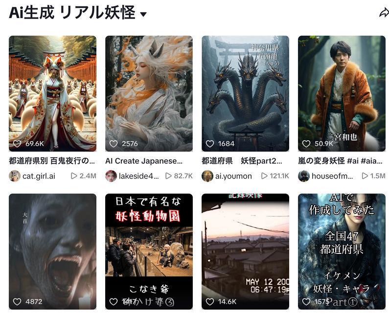

AIホラーは既にバズっている——市場の証拠

この映像は正常です。
リミナルスペース×アナログホラー。AI生成の怪奇映像チャンネル。投稿開始3ヶ月で登録者2.8万人突破。
最多動画 40万回再生突破
遷移圏見聞録
架空の異世界が舞台のAI生成モキュメンタリー。2023年投稿開始、書籍化も果たした人気チャンネル。
170万再生 / 登録者26万人
AI妖怪変身動画
AIで生成した妖怪への変身動画シリーズ。妖怪テーマはショート動画フォーマットとの相性◎。
100万再生超えアカウントが多数出現
"Another"
実写×AI VFXのハイブリッドホラーショート。バイラルトレーラーがSNS横断で拡散。
2000万回以上再生（SNS横断）AIクリエイター（予定）：STUDIO異次元
すべてをAIで映画として成立させることに挑むAIクリエイター。 "No Actors. No Cameras. Just Code."—— AI映像を「物語としての映画」に昇華した先駆者。 SCP財団ベースのAI映画シリーズで登録者5.8万人突破（2026年3月）。 WAIFF 2026（世界AIフィルムフェスティバル） ファイナリスト。


和製ホラーのヒットメーカーが、AI縦型という新フォーマットに挑む。
東京都出身。パイオニアLDC（現NBCユニバーサル・エンターテイメントジャパン）入社後、宣伝・制作職を経てフリーに。2002年、自身オリジナルのホラー『もうひとりいる』で監督デビュー（監修：清水崇）。プロデューサーとして『渋谷怪談』『姑獲鳥の夏』『蝉しぐれ』『魍魎の匣』など話題作を連続して手掛ける。2008年、山田悠介原作『リアル鬼ごっこ』を脚本・監督しスマッシュヒット。2019年、秋元康プロデュース・ラストアイドル主演の人気コミック実写化『がっこうぐらし！』を監督・脚本。その後も松竹イマーシブイベント演出やアイドルMV演出など手掛け、2021年には初小説を宝島社より上梓。
- 2002『もうひとりいる』監督・脚本
- 2004『渋谷怪談』P・原案
- 2005『姑獲鳥の夏』P
- 2007『魍魎の匣』P
- 2008『リアル鬼ごっこ』監督・脚本
- 2010『リアル鬼ごっこ2』監督・脚本
- 2013『生贄のジレンマ』P
- 2015『リアル鬼ごっこ』（園子温監督版）P
- 2019『がっこうぐらし！』監督・脚本

『リアル鬼ごっこ』（2008）
山田悠介原作をスマッシュヒットに導いた代表作。一般人が「名字」で選ばれ突然殺される側になる極限サバイバルホラー。「弱者が異常な世界で生き延びる」構造の原点。
→ 和製ホラー×社会派テーマの実績
『がっこうぐらし！』（2019）
秋元康プロデュース、ラストアイドル主演の人気コミック実写化。ゾンビ×学校×少女というテーマが本作と直接共鳴する。
→ ホラー×若者コンテンツ×IP実写化の適性を証明